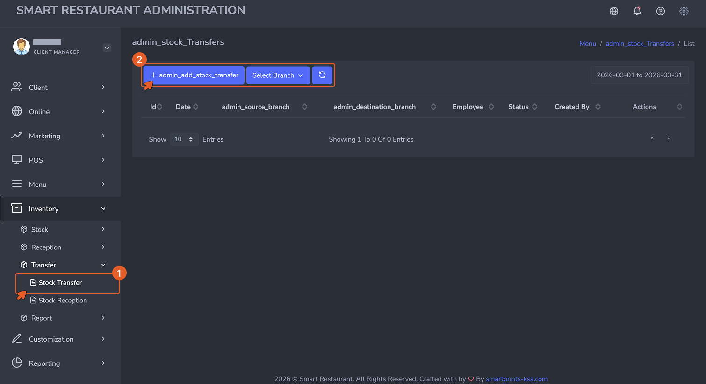
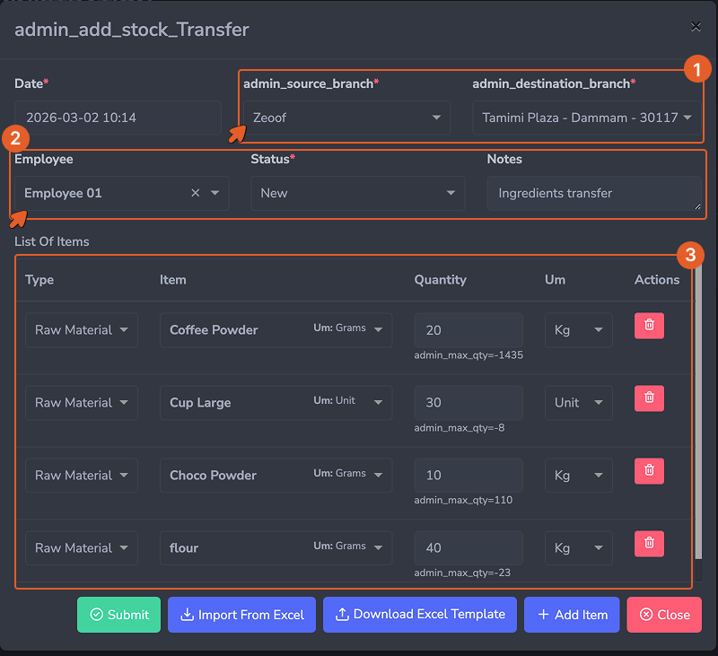

Stock Transfers & Preparations Moving and Making: Stock Between Branches and Kitchen Batches
This page covers two types of stock movement that happen mid-operation: transferring stock between branches, and recording kitchen preparation batches.
تحويلات المخزون والتحضيرات النقل والصنع: المخزون بين الفروع ودُفعات المطبخ
تغطي هذه الصفحة نوعين من حركات المخزون التي تحدث أثناء التشغيل: تحويل المخزون بين الفروع، وتسجيل دُفعات التحضير في المطبخ.
Stock Transfers — Overview
تحويلات المخزون — نظرة عامة
When stock needs to move from one branch to another, the system handles it through a two-step process: the source branch creates a Stock Transfer to record what is being sent out, and the destination branch records a Stock Reception to confirm what was received. Both steps are required. A transfer alone does not update the destination branch's stock — the reception record is what completes the movement.
عندما يحتاج المخزون إلى الانتقال من فرع إلى آخر، يتعامل النظام مع ذلك من خلال عملية مكوَّنة من خطوتين: ينشئ الفرع المُرسِل تحويل مخزون لتسجيل ما يتم إرساله، ويسجِّل الفرع المستلِم استلام مخزون لتأكيد ما تم استلامه. كلتا الخطوتين مطلوبتان. التحويل وحده لا يُحدِّث مخزون الفرع المستلِم — سجل الاستلام هو ما يُكمل عملية النقل.
Stock Transfer — Source Branch
تحويل المخزون — الفرع المُرسِل
Navigate to Inventory → Transfer → Stock Transfer, then click + Add.
انتقل إلى المخزون ← التحويل ← تحويل المخزون، ثم انقر على + إضافة.

The Stock Transfer form is completed by the source branch. It records what is being sent, to which branch, and in what quantities.
يُكمِل الفرع المُرسِل نموذج تحويل المخزون. يُسجِّل ما يتم إرساله، وإلى أي فرع، وبأي كميات.
- Date (Required): The date and time the transfer is being initiated.
- Source Branch (Required): The branch sending the stock. Inventory will be deducted from this branch upon completion.
- Destination Branch (Required): The branch that will receive the stock.
- Employee (Optional): The staff member initiating the transfer.
- Notes (Optional): Any instructions or references relevant to this transfer.
- List of Items: Each ingredient or product being transferred is added as a line with Type, Item, Quantity, and Unit.
- التاريخ (مطلوب): تاريخ ووقت بدء التحويل.
- الفرع المُرسِل (مطلوب): الفرع الذي يُرسل المخزون. سيُخصَم المخزون من هذا الفرع عند الإتمام.
- الفرع المستلِم (مطلوب): الفرع الذي سيستلم المخزون.
- الموظف (اختياري): الموظف الذي يُبادر بالتحويل.
- ملاحظات (اختياري): أي تعليمات أو مراجع ذات صلة بهذا التحويل.
- قائمة الأصناف: يُضاف كل مكون أو منتج يتم تحويله كسطر يحتوي على النوع، الصنف، الكمية، والوحدة.
Stock Reception — Destination Branch
استلام المخزون — الفرع المستلِم
Once the items physically arrive at the destination branch, that branch records a Stock Reception to confirm receipt.
بمجرد وصول الأصناف فعلياً إلى الفرع المستلِم، يُسجِّل ذلك الفرع استلام مخزون لتأكيد الاستلام.
Navigate to Inventory → Transfer → Stock Reception, then click + Add.
انتقل إلى المخزون ← التحويل ← استلام المخزون، ثم انقر على + إضافة.

The Stock Reception form is completed by the destination branch. It links to the original transfer and confirms the quantities received.
يُكمِل الفرع المستلِم نموذج استلام المخزون. يرتبط بالتحويل الأصلي ويؤكد الكميات المستلَمة.
- Date (Required): The date and time the items were received.
- Branch (Required): The receiving branch. Stock will be added here upon submission.
- Source Branch (Required): The branch that sent the stock.
- Stock Transfer (Required): The original transfer this reception is linked to. Selecting the transfer pre-populates the expected items and quantities.
- List of Items: Verify the quantities received against what was sent. Adjust if the actual received quantity differs — for example if items were damaged in transit or quantities were short.
- التاريخ (مطلوب): تاريخ ووقت استلام الأصناف.
- الفرع (مطلوب): الفرع المستلِم. سيُضاف المخزون هنا عند الإرسال.
- الفرع المُرسِل (مطلوب): الفرع الذي أرسل المخزون.
- تحويل المخزون (مطلوب): التحويل الأصلي المرتبط بهذا الاستلام. يؤدي اختيار التحويل إلى ملء الأصناف والكميات المتوقعة مسبقاً.
- قائمة الأصناف: تحقق من الكميات المستلَمة مقابل ما تم إرساله. عدِّل إذا اختلفت الكمية المستلَمة الفعلية — على سبيل المثال إذا تلفت أصناف أثناء النقل أو كانت الكميات ناقصة.
Submitting the Transfer Flow
إتمام عملية التحويل
When a Stock Transfer is created, stock is immediately deducted from the source branch. Once the Stock Reception is generated, that stock is added to the destination branch. Both records are stored for audit purposes and appear in the Stock Transfer Report to ensure full visibility.
عند إنشاء تحويل مخزون، يُخصَم المخزون فوراً من الفرع المُرسِل. بمجرد إنشاء استلام المخزون، يُضاف ذلك المخزون إلى الفرع المستلِم. يُحفَظ كلا السجلين لأغراض التدقيق ويظهران في تقرير تحويل المخزون لضمان الرؤية الكاملة.
Transfer Approval
الموافقة على التحويل
If your operation requires a validation step before stock movements are confirmed, transfer approval can be enabled. When active, a transfer remains in a pending state until a manager or authorized user approves it. Only after approval can the destination branch proceed with the reception. Rejected transfers are flagged and do not affect stock on either branch.
إذا كانت عمليتك تتطلب خطوة تحقق قبل تأكيد حركات المخزون، يمكن تفعيل الموافقة على التحويل. عند التفعيل، يظل التحويل في حالة انتظار حتى يوافق عليه مدير أو مستخدم مُفوَّض. فقط بعد الموافقة يمكن للفرع المستلِم المضي قدماً في الاستلام. التحويلات المرفوضة تُوضَع علامة عليها ولا تؤثر في مخزون أي من الفرعين.